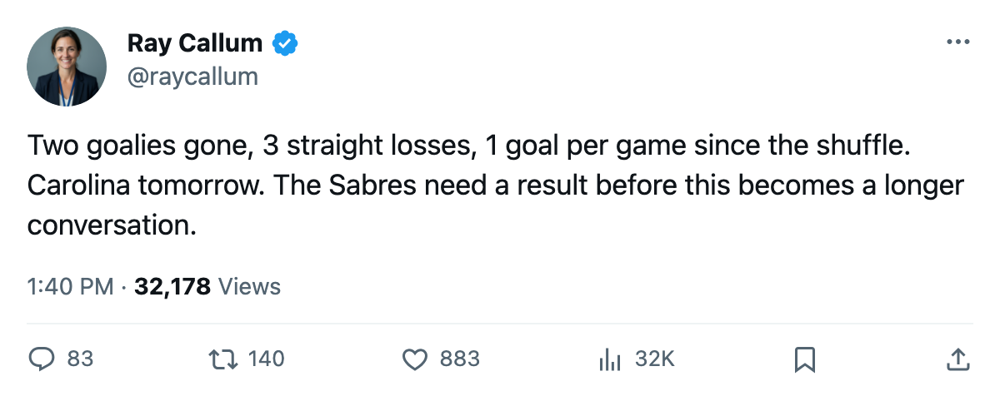

Goalie Watch: Buffalo Cut Two Goaltenders This Week, and the New Pair Has Not Played Together
Martin Biron and Francois Anderson are off the roster. Ryan Miller is the G1 with 2 career starts. Carolina visits tomorrow.
 Ray CallumSenior correspondent · Home Ice Network
Ray CallumSenior correspondent · Home Ice Network
 Ryan Miller80 took the number-1 crease for
Ryan Miller80 took the number-1 crease for  Buffalo Sabres this week.
Buffalo Sabres this week.  Martin Biron87, who started 9 of the Sabres' first 12 games, and backup Francois Anderson78 are both off the active roster.
Martin Biron87, who started 9 of the Sabres' first 12 games, and backup Francois Anderson78 are both off the active roster.  Mika Noronen80 moved into the G2 slot.
Mika Noronen80 moved into the G2 slot.
Miller has 2 starts this season. Both came in the last 3 games, all losses: 3-1 at  Calgary Flames on October 31, 2-1 in overtime at
Calgary Flames on October 31, 2-1 in overtime at  Edmonton Oilers on November 1, and 2-1 at
Edmonton Oilers on November 1, and 2-1 at  Columbus Blue Jackets on November 3. The Sabres scored 1 goal in each of those three games. They are on a 3-game losing streak and sit last in the Northeast at 2-6-2 with 10 points.
Columbus Blue Jackets on November 3. The Sabres scored 1 goal in each of those three games. They are on a 3-game losing streak and sit last in the Northeast at 2-6-2 with 10 points.
Buffalo Sabres are 2-3 at home and 2-5 on the road. They scored 31 goals in 12 games and have been shut down to 1 in every game since the crease changed.
Tomorrow they visit  Carolina Hurricanes for the first meeting of the season. Carolina is 4-4-2 with 14 points, 2-2-0 in their last four, and 4-3 at home.
Carolina Hurricanes for the first meeting of the season. Carolina is 4-4-2 with 14 points, 2-2-0 in their last four, and 4-3 at home.  Kevin Weekes88 has started 9 of 12 for the Hurricanes. Carolina Hurricanes have also filed 8 injury spells this season but only 77 days lost, and the current list carries
Kevin Weekes88 has started 9 of 12 for the Hurricanes. Carolina Hurricanes have also filed 8 injury spells this season but only 77 days lost, and the current list carries  Steve Rucchin78 (elbow, back December 19) and
Steve Rucchin78 (elbow, back December 19) and  Harold Druken74 (abdomen, back November 12).
Harold Druken74 (abdomen, back November 12).
Miller started the last two games. Noronen has not appeared in any game this season and appeared once last season with Carolina Hurricanes, per the workload table. The logical read is Miller tomorrow, but the Sabres have no track record of how he handles a fourth straight start with nothing in front of him.
| goaltender | GP | GAA | record | last season |
|---|---|---|---|---|
| Ryan Miller | 2 | - | 0-2-0 | - |
| Mika Noronen | 0 | - | 0-0-0 | CAR, 1 GP |
The Sabres' next two after Carolina:  Atlanta Thrashers on the road November 9, then
Atlanta Thrashers on the road November 9, then  Phoenix Coyotes at home. Atlanta Thrashers are 3-7-1, the worst record in the Southeast. That's the on-ramp the schedule gives them.
Phoenix Coyotes at home. Atlanta Thrashers are 3-7-1, the worst record in the Southeast. That's the on-ramp the schedule gives them.
